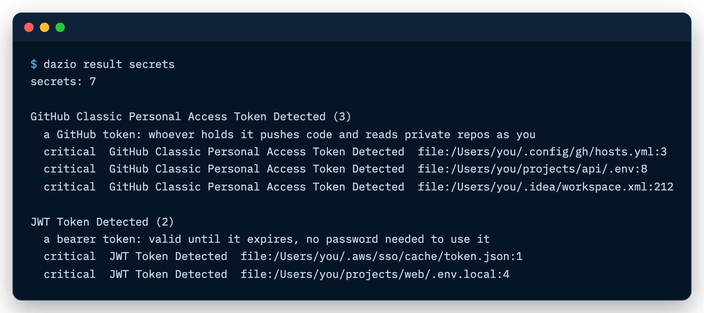

What it checks
Dazio does three things: it catches malware in the packages you install,
including malware already on your machine, finds your exposed secrets, and
flags toolchain settings worth changing. A one-time dazio scan covers all
three for your home folder. dazio protect keeps checking in the background and
checks installs before they land.
Malware at install
Dazio checks packages as they install, and it also finds malware that landed before you installed Dazio. Both checks run on your machine, against a local copy of the threat feed.
- Already on disk. Every scan compares the packages in your home folder
with the feed: what is installed, and what your projects’ lockfiles pin. The
scan needs a local feed copy. Your first
dazio scandownloads one once you accept the terms.dazio feed enablekeeps it updated: it takes your terms assent and your email, and requires analytics on. Updates start once you follow the emailed confirmation link.dazio protectsets up the background service, feed updates and install checks in one go. - At install. Once installs are protected, each package is checked as your package manager downloads it, before any of its install scripts run. That covers installs your agent runs too.
dazio protect refuses
known-malware installs; choose warn when you customize it to have them install
and only be recorded. dazio safe-pkg enable on its own still defaults to warn:
a known-malware package installs, and the detection is recorded and reported,
unless you pass --mode block. On a machine
where install protection is not enabled, dazio protect -- <command>, for
example dazio protect -- npm install, runs that one command with its installs
checked in block mode, without editing your package-manager config. It needs
the background daemon running and the feed enabled; without them it says it is
running unprotected and runs the command unchecked. Where install protection is
enabled, protect -- uses the mode you chose.Turning on install protection edits your package-manager configuration, and
for some tools your shell’s PATH. Dazio lists every file before it writes
one and marks each edit with how to undo it. dazio safe-pkg disable restores
them all.
Coverage by ecosystem
Detected means scans find a known-malware package already on disk. Protected means installs are checked before the package lands.
| Ecosystem | Detected: what scans read | Protected at install |
|---|---|---|
| npm (npm, npx, pnpm, yarn, bun) | Installed packages in node_modules under your home folder, including global installs from nvm, fnm, volta and ~/.npm-global; the global packages npm list --global reports, wherever they live; package-lock.json, yarn.lock, pnpm-lock.yaml, bun.lock |
Yes: npm, npx and pnpm through ~/.npmrc, yarn through ~/.yarnrc and ~/.yarnrc.yml, bun through a PATH shim |
| PyPI (pip, uv, uvx, poetry, pdm, pipx, pipenv) | Installed packages under your home folder: virtualenvs, pip --user (~/.local/lib), pyenv, asdf, rye, uv, pipx, conda and poetry environments; the packages pip list reports, wherever they live; uv.lock, poetry.lock, Pipfile.lock, exact == pins in requirements.txt |
Yes: pip through pip.conf, uv and uvx through uv.toml, poetry, pdm and pipx through PATH shims. pipenv has no dedicated hook. |
| RubyGems (gem, bundler) | Installed gems under your home folder; Gemfile.lock |
Yes, through ~/.gemrc |
| Cargo | Downloaded crates in the Cargo registry cache; Cargo.lock |
Yes, through ~/.cargo/config.toml |
| Go modules | The module cache; go.mod |
Yes, through Go’s GOPROXY setting. A GOPROXY environment variable overrides it. |
| NuGet (dotnet, nuget) | The global packages folder; packages.lock.json, or PackageReference entries in .csproj |
Yes, through your user NuGet.Config |
| Composer (PHP) | vendor/composer/installed.json; composer.lock |
No |
| VS Code, Cursor and Windsurf extensions | Installed extensions | No |
| Agent skills (Claude, Codex and others) | Installed skills, matched by name | No |
| Homebrew | In progress | No |
| Maven and Gradle | In progress | No |
Scans also list the MCP servers and CLI agents on your machine
(dazio result inventory). No malware verdict is given for them.
What it does not see
Install checks cover the package managers’ normal downloads. Where they miss an install, the next scan’s on-disk check is the catch.
-
Packages outside your home folder. Scans read files only under your home folder, so gems in Homebrew or system locations are not read. Global npm and pip installs are the exception, read through
npm list --globalandpip list, using thenpmandpipfirst on the scan’sPATH. Background scans run in the daemon, whose login service does not take your shell’sPATH, so they can miss a Homebrew npm or pip;dazio scan --localfrom your shell reads them. Installs outside your home folder are still checked at install. -
A warm cache. An install served entirely from the package manager’s local cache makes no request, so there is nothing to check.
-
Project-level config. A repository’s own
.npmrc,pip.confor similar file outranks your user file and can route around the check. -
Registry changes after enabling. A registry of your own set before
dazio safe-pkg enableis kept and installs from it are still checked. Point a package manager at a different registry afterwards and Dazio warns and leaves it alone, unchecked, rather than overriding it. -
git and
file:dependencies, and plain-http://downloads, are not checked at install. -
Shims need a new shell. bun, poetry, pdm and pipx are covered through
PATHshims, which take effect in shells started after protection is enabled. -
Network activity by install scripts is not covered.
Dazio runs on macOS and Linux. Windows and WSL2 are not supported.
Exposed secrets
API keys in markdown files your agent wrote, tokens in shell history, forgotten
.env files: Dazio finds them before malware does. It reports where each
secret is, by file and line, and never its value.
Scans look in:
.envfiles and shell history- git, SSH and GitHub CLI configuration
- npm and PyPI credentials
- cloud provider, Kubernetes and Docker configuration
- infrastructure-as-code files
- JetBrains IDE settings and WireGuard configuration
- AI tools: stored credentials, chat logs, MCP server configuration and agent context files
dazio result secrets lists each finding with its file and line.

Toolchain hardening
Package managers ship with safety settings off. Dazio finds each one and shows you exactly what to change. Every finding carries a “what to change” line.
- Install cooldowns. For npm, pnpm, yarn and npm-check-updates: whether a minimum release age is set, so freshly published and possibly compromised versions are not installed at once, and whether the tool is new enough to enforce one.
- Outdated npm. npm too old for safe-by-default installs.
- pip settings. Index URLs that embed credentials, indexes or
find-linksover plainhttp://, anextra-index-urlat all (a dependency-confusion risk), atrusted-hostthat disables TLS verification, and a pip config file holding credentials that other users can read. ~/.netrcreadable by other users.
IDE and agent hardening checks are in progress.
dazio result misconfig lists each finding and what to change.